最初に断っときます。
今回の場所は内緒です。名称も私が勝手に付けました。
ある種のおとぎ話だと思って聞いてくださいな。
何でか、というと…、まあ、ご覧下され。
ここは大分県某所、という事にしておこう。山里から「山」へのグラデーションの途中、里とも言えず山ともいえない、まるで彼岸と此岸の境目のような微妙な境界線上にその洞窟の入口は存在する。
洞窟へのアプローチは困難を極める。
垂れ下がった鎖を唯一の頼りに絶壁、と言って差し支えない岩壁を登っていく。
まるで蜘蛛の糸のように心細いながらも唯一の拠り所である鎖を握り締め岩に身体をぶつけ、頭を木の枝に突っ込みながら上を目指す。
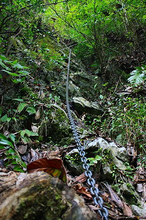
今まで数多くの困難なミッションを経験してきた。狭い未舗装道、登山道、台風、大雨、恐い住職、怖い宗教…
しかしこんな川口探検隊みたいなハードなアプローチは初めてだ。
珍寺大道場史上最強の難関といっていいだろう。
というわけで私個人の意見ではあまりにも危険なため半端な気分でここへ行く事はお勧めできません。てか行かないように場所を伏せたわけでして…
数本の鎖場を経由していく。
本当に目的の場所はあるのかどうか、大いなる疑問と疑惑が頭をよぎりそうになる頃、岩陰に石塔が見えてくる。
そこが目的の洞窟である。
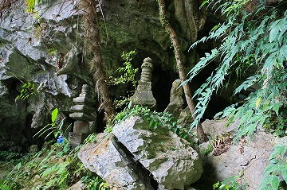
切れた息を整える間もなく、中を覗いてみて腰を抜かしそうになった。
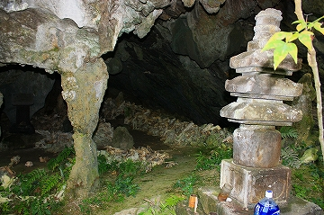
大量の骨が積み上げられているのだ。
事前に骨がいっぱい、という話は聞いていたがこんなに大量とは思ってもみなかった。
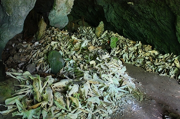 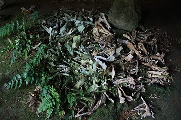
ここは猟の神様として猟師の信仰を集めている。
獲物がたくさん獲れるように獲物の頭蓋骨を奉納する風習なのだ。
このように猟師が獲物をこれだけの規模で奉納する場所など日本広しと言えどもここぐらいのものだろう。
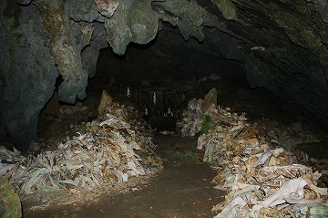
さして広くない洞窟だがその数は圧倒的だ。
何でも以前は足の踏み場もないほど骨が散乱していたが、崖の下に骨を捨てたりして、これでもスッキリしたんだとか。
人など滅多に訪れる事のないであろうこの洞窟に堆積する大量の獣の骨。
ちなみに女人禁制だそうです。
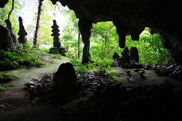 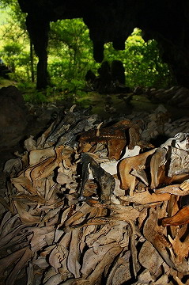
洞窟の隅には猪の頭蓋骨だけを奇麗に並べた一画がある。
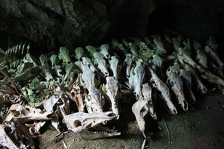
まるで博物館の展示のように並ぶ頭蓋骨。
その整然とした様は奥に乱雑に積み上げられた骸骨群とはあまりに激しいコントラストを成していた。
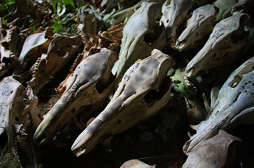
頭蓋骨には奉納者の氏名が書き込まれていた。ここから決して近くはない地名が書かれているのを見ると相当広い信仰圏を持っていることが判る。
これらの骸骨はあの険しい崖を登ってここまで運ばれたのだ。
その意思のチカラの強大さにひたすら平伏するしかないではないか。
この日は相当な暑さで、この洞窟を離脱した瞬間に服を着たまま川に飛び込んだ程の気温だったのだが、洞窟内は比較的涼しく、でも逆に冷や汗でダクダクになりました。
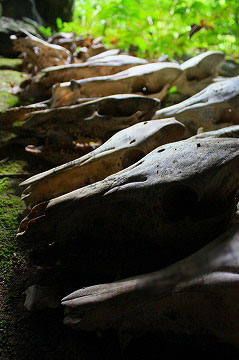 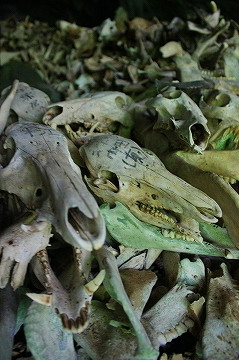
積み上げられた骨の状態も様々で、まさに肉が付着しているのでは、と思えるほど赤く生々しいものや水洗いしたかのように真っ白なもの、黒ずんだものや苔が付着して緑色になったものなどなど。
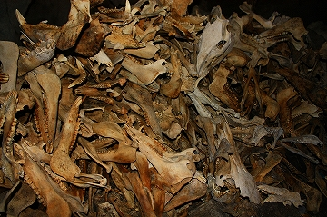 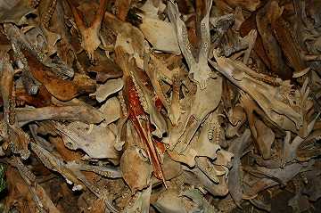
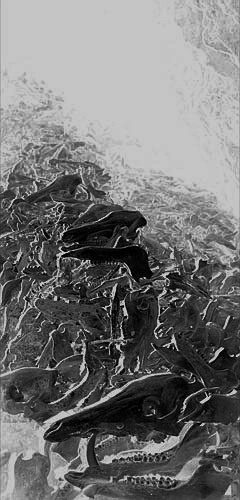
ところで。
猪の牙って表に出ているのは2〜3センチだが、実は下顎の中に隠れていて実際には凄く長いのだ。
以前、何かの科学番組で猪の下顎から牙を引き出す映像を見たのだが、あまりの長さにビックリした事を思い出した。
引っ張っても引っ張ってもまだ抜けないぞ、みたいな。
目の前にある頭蓋骨で実見しようと、一瞬思ったがとても恐れ多くてそんな気にはなれなかった。
骸骨に触る事すらもはばかられるような圧倒的な神性を帯びた雰囲気だったのだ。
私は基本神仏の神性とかってあまり気にしないのだが、ここだけは別だ。
人に食われるために捕獲され皮を剥がれ肉を食われたその残骸が奉納というカタチを以って集められる。
要は人に食われた獣たちの墓場なのだが、その咆哮が聞こえてきそうだ。
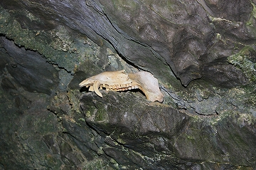
ひとつだけ天井の窪みに置かれていた上顎部。
一番奥には傾いた小さな祠が大量の骨に埋まるようにして建っていた。
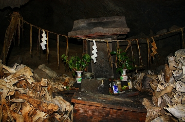
先程、獲物が獲れるように祈願する、と記したが、おそらく同時に人の生の為に命を捧げた獣の供養の意味合いもあるのかもしれない。
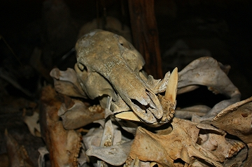
このように骸骨が堆積する場所としてヨーロッパのカタコンベが挙げられると思うが、言うまでもなく人間の骨を飾るカタコンベと獣の骨を積むこの洞窟とではその意味合いが違う。
ただどちらも人間が信仰の名の下に行った行為の集積として出現した風景である事は確かだ。
信仰のチカラの持つ凄みを久々に目の当たりにして鳥肌が立つ思いだった。